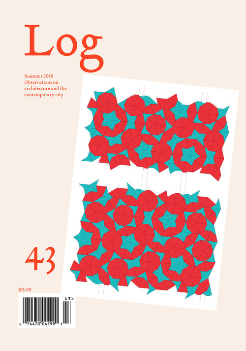
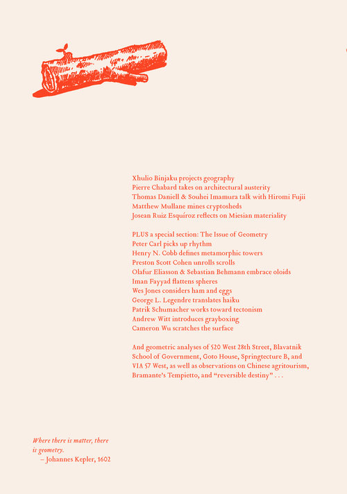
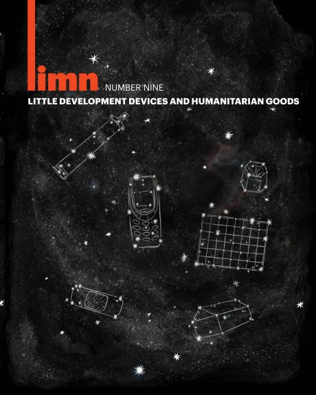
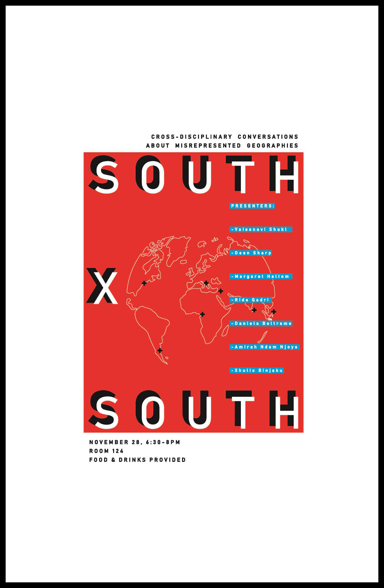

xhulio
Xhulio Binjaku is an architectural designer, geographer and writer.
He is a graduate of MIT and UF.
Currently, he is assisting Curator Hashim Sarkis with La Biennale di Venezia.
xhulio@xhulio.com


With Milap Dixt, our MIT Master of Architecure thesis looks at mountains in Ecuador as persons and institutions to uphold Rights of Nature.
To see more of this project, look inside Architecture and Action
,edited by J. Meejin Yoon and Irina Chernyakova.


Promiscuos Geometries, designed with Anne Graziano, is a project that plays with shadows.
It uses the anamorphic projections, Booleon operations, and the inherent properties of lights and cones to create objects from shadows.
This project was presented at the 107th Annual Meeting
of the ACSA.


In this issue of
Log 43,
I look into the geometry and history of two world maps designed by architect
Bernard Cahill's "Butterfly Map" and inventor Buckminster Fuller's "Dymaxion Map."

In a series of essays with Branda Chalfin, Director of African Studies at UF,
we look at the fascinating story of sanitation businesses in Tema, Ghana in this issue of
limn

Joaquim Cardozo was the remarkable structural engineer of Oscar Niemeyer.
I presented his brilliant and tragic story, never fully told in English,
at the 107th Annual Meeting
of the ACSA.

In Fall 2018 at the GSD, I presented a lecture about recent architecture competitions in Albania,
highlighting their misrepresentation and misappropriation of Albanian culture and history.


some Text here maybe a lot of text that
overflows the div its in

some Text here maybe a lot of text that
overflows the div its in

some Text here maybe a lot of text that
overflows the div its in